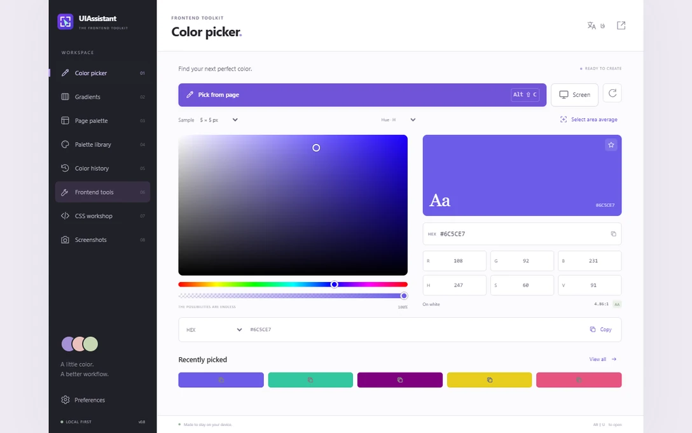
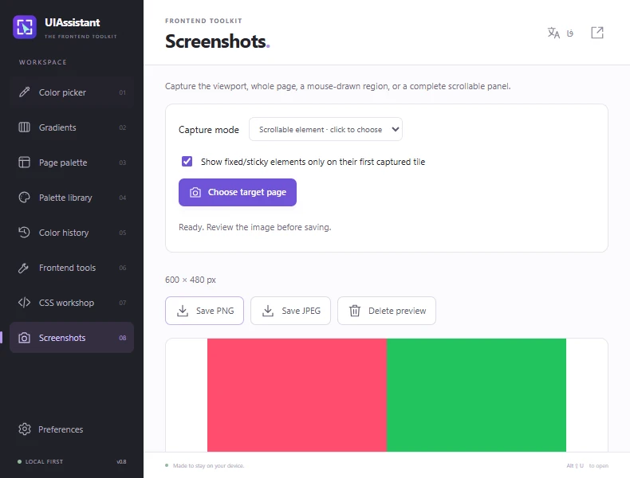

Pick colors from the page
Sample a pixel or average a region. Copy the selected color automatically as HEX, RGB, HSL or a CSS variable.
Open-source browser extension
UIAssistant puts a color picker, CSS inspector, spacing ruler and screenshot tools in your browser. Pick a pixel, copy a value or capture a scrollable panel without leaving your workflow.

The toolbox
Go from a detail on a page to a color, CSS value or image you can use in your project.
Sample a pixel or average a region. Copy the selected color automatically as HEX, RGB, HSL or a CSS variable.
Build palettes from page colors. Edit linear, radial and conic gradients and export CSS, PNG or supported SVG.
Read computed typography, borders, shadows and box dimensions. Measure the gap between two elements.
Look for overflow, clipped text and basic accessibility issues. Preview RTL or LTR and compare against a local reference image.
Build Grid layouts, fluid sizes, shadows, corner radii and easing curves. Export design tokens as CSS or JSON.
Save the viewport, a selected region, the full page or a chosen scrollable element as PNG or JPEG.

Featured workflow
Choose an area with its own scroll bar. UIAssistant scrolls that element, stitches the visible tiles and restores its scroll position.
Get the extension
These are unsigned developer builds from GitHub Releases. Start with the install steps below.
Chrome 116 or newer
Download ZIPEdge 116 or newer
Download ZIPFirefox desktop 140 or newer
Download ZIP
Extract the ZIP. Open chrome://extensions or
edge://extensions, enable Developer mode, choose Load unpacked, and
select the folder containing manifest.json.
Open about:debugging#/runtime/this-firefox, choose This Firefox → Load
Temporary Add-on, then select the ZIP or the extracted manifest.json.
Temporary installation ends when Firefox restarts.
On your device. UIAssistant keeps previews temporarily in memory and saves a file only when you choose to export.
No. The extension has no account, subscription or analytics. You can inspect its source on GitHub.
They surface common issues such as missing image alternatives and unnamed controls. Treat the results as a starting point for manual review.